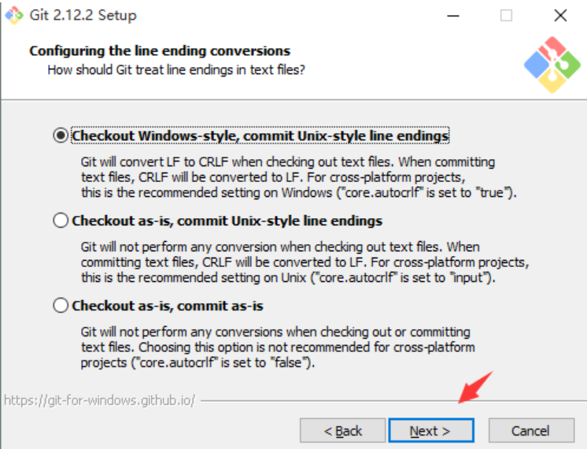

环境
- 系统：Win10 64位
- Git: 2.17.0.windows.1
- Node.js: 8.11.1
- npm: 5.6.0
- Hexo: 3.7.1
- Next: 5.1.4
背景
从实习结束，开始正儿八经看论文的时候，开始萌生了写博的想法。研一寒假在家不想看论文刷LeetCode的时候，学习了很多大神优秀的解法，却奈何下次遇到类似的方法还是困惑，便想找个地儿记录下来。
一开始选择了博客网站——类似博客园或者CSDN之类的，图形界面，操作简便，但存在广告，排版杂乱的问题。无疑之间发现了Markdown——写博利器，简洁明了，Jupyter Notebook兼容，代码和文字说明同时显示，非常适合数据分析工作。
这是我的博客成品：https://sunflowerjy.github.io/ 搭建此博客步骤很简单，顺利的话最快半小时就能搭建成功。然而标题是填坑实记，一看就是有故事的人/(ㄒoㄒ)/~~故事听我娓娓道来~
结构
- 30分钟搭建最基础博客
- 搭建博客遇到的各种坑
- 打造个性化的博客
30分钟搭建最基础博客
写在最前面，提示：此步骤只适合环境与我一样，因为之前我也是参考别人分享的博文，然而由于各种软件的更新导致很多步骤都会报错，所以后期有可能由于软件更新而导致按照本文的方法安装配置出现错误。
安装Git
Git的下载地址(Windows版本)：https://git-scm.com/download/win 选择适合自己系统的版本。 {:height=”36px” width=”36px”}
{:height=”36px” width=”36px”}
- 标注 1：仅使用 Git Bash 进行操作；
- 标注 2：在选择使用 Git Bash 进行操作的同时，也可以使用 Windows 命令行操作，建议选择此项；
- 标注 3：在选择使用 Git 的同时，也把 Unix 工具加入到了我们的配置之中，而且此操作会覆盖 Windows 的一些工具，强烈不建议选择此项。
{:height=”36px” width=”36px”}
这里也需要注意一下，之后在git中提交代码可能会报错。不过默认next也没关系，可以安装好之后再更改相关配置。